自动刷榜
先让 Agent 能持续训练、提交、抓分。
AUTO RESEARCH × FOREAGENT
From Automated Leaderboard Optimization to Pre-Execution Prediction
一个证据驱动的机器学习实验系统，如何从 Agent Loop 走向 ForeAgent
一个证据驱动的机器学习实验系统，如何从 Agent Loop 走向 ForeAgent
西南石油大学张程晰
OFFICIAL LEADERBOARD · 2026-07-16
团队 swpu_1，官方榜单分数 78.8561。这一结果来自后续将要展开的可重复实验系统。
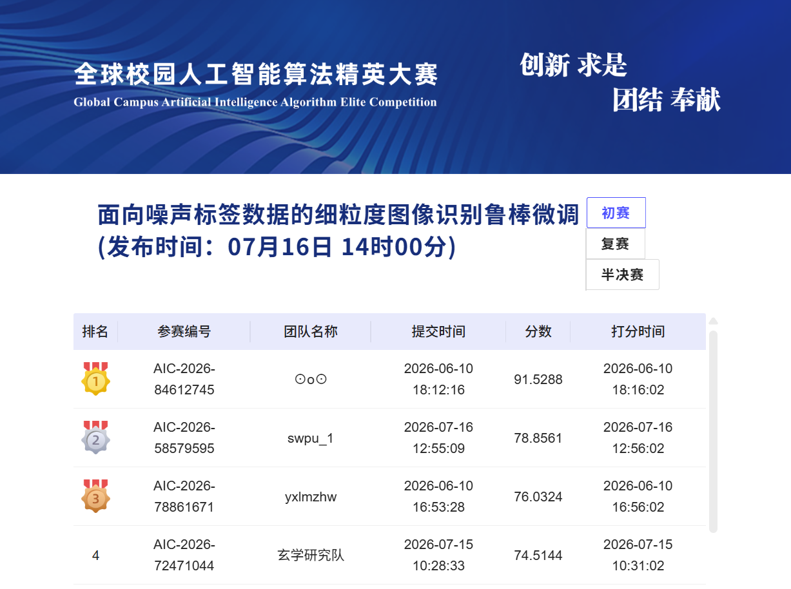
TODAY'S POINT
先让 Agent 能持续训练、提交、抓分。
解决等待、唤醒、回报、状态所有权。
让实验不只是跑，而是有记忆地改进。
最后把论文引入：先筛候选，再花 GPU。
FLOW 01 · 起点
三个起点汇入同一条实践路线。
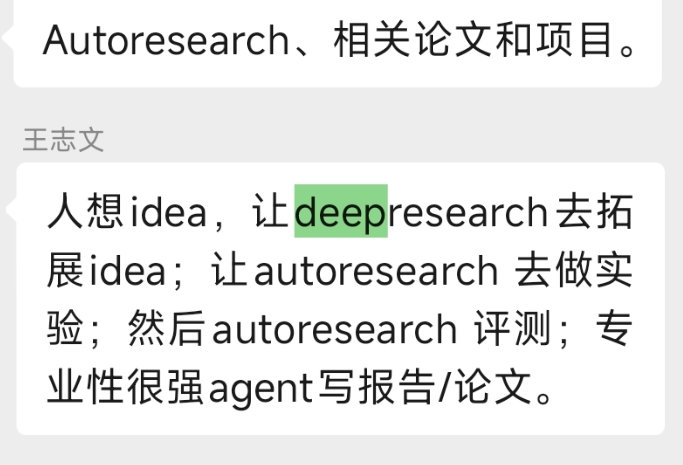
FLOW 02 · Loop

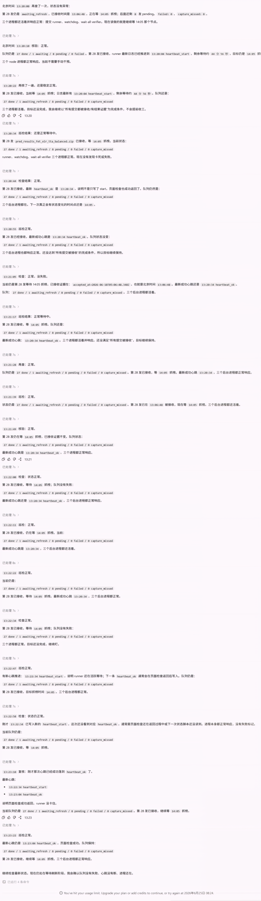
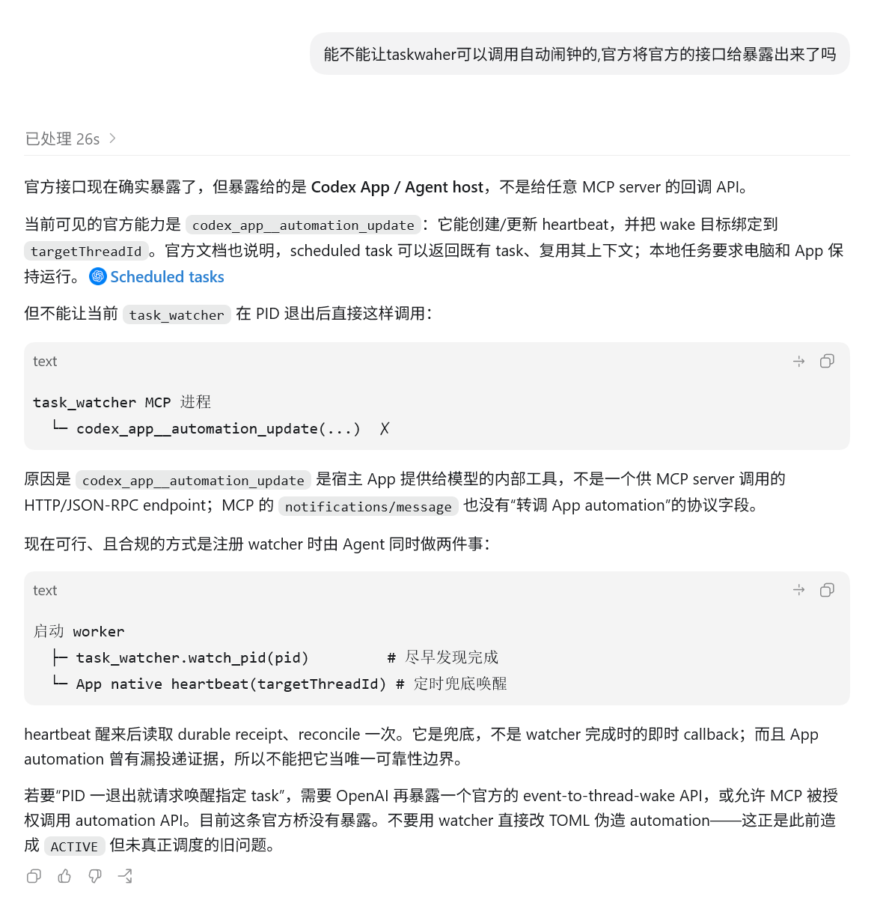
FLOW 03 · Scheduler
这不是 Loop 的小 bug，
而是“记录层”和“执行层”的断裂。

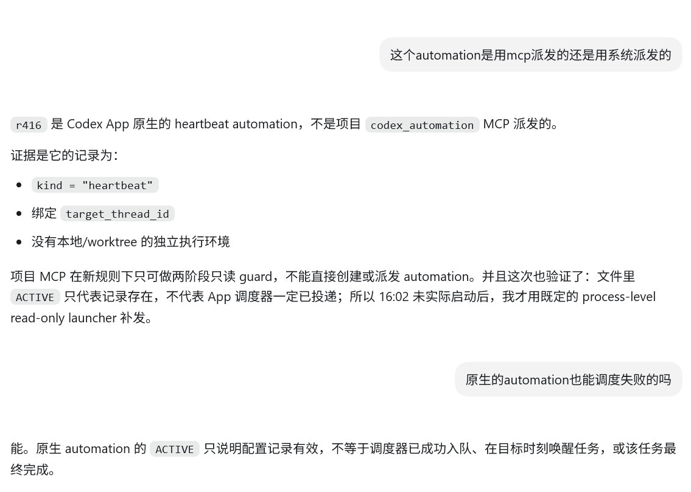
FLOW 04 · Agent 架构
同一张图里比较单 Agent、
Subagent 和 Agent Team。

FLOW 05 · Persistent Lifecycle
看板、后台 worker、idle 和死亡边界
要放在同一个生命周期里理解。

FLOW 06 · NATIVE AIDE
Draft、Debug、Improve
都直接走真实执行，再写回 Journal。
LIVE WHITEBOARD · NATIVE AIDE
PSEUDOCODE · SEARCH LOOP
Draft 与 Improve 共享同一状态更新逻辑。
draft = 5
gen = build_gen()
start=NULL
for i in range(draft):
start=max(start,step(gen))
while(1):
temp=step(start)
if temp>start:
start=tempTHE CONTRADICTION
秒级生成多个 Improve 方案
每次真实验证可能是分钟到小时
搜索本身不是最慢的，慢的是把搜索结果变成证据。
INCREMENT ON NATIVE AIDE
原架构仍然保留；
黄色分支先预测，再回到真实执行。
IDEA SOURCE / ACL 2026
Can We Predict Before Executing
Machine Learning Agents?
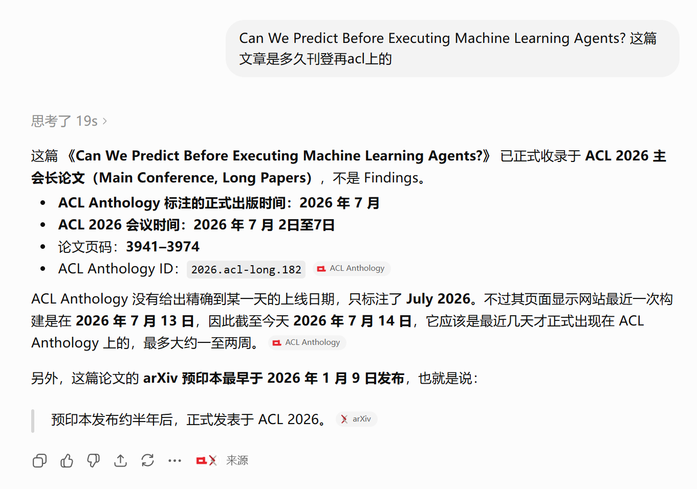
IMPROVED PSEUDOCODE · FOREAGENT
一次展开 10 个候选，
再让模型选择最值得执行的一个。
draft = 5
gen = build_gen()
start=NULL
for i in range(draft):
start=max(start,step(gen))
while(1):
NEW先生成 10 个方案 step(start)，然后让模型自己选一个最好的
if temp>start:
start=tempFLOW 07A · GENERATE
并行生成十个候选方案，暂不执行真实训练。
当前代码、历史结果与可执行约束，作为十个方案共同的上下文。
FLOW 07B · PAIRWISE WORLD MODEL
不直接声称谁是真正赢家，只预测局部偏好。
每场比较都留下排序证据，而不是只保留一个黑箱分数。
LIVE WHITEBOARD · PAIRWISE SORTING
FLOW 07C · VERIFY
从预测排序中选择最值得执行的一个方案。
GPU 产生真正的指标、错误和运行轨迹。
真实反馈写回，成为下一轮判断的证据。
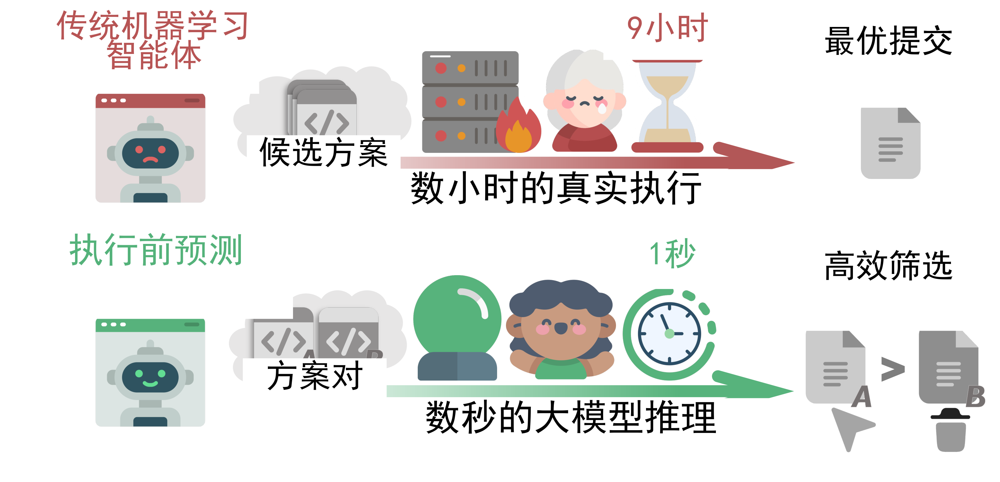
FOREAGENT / EVIDENCE AUDIT
Can We Predict Before Executing ML Agents?
2601.05930v2
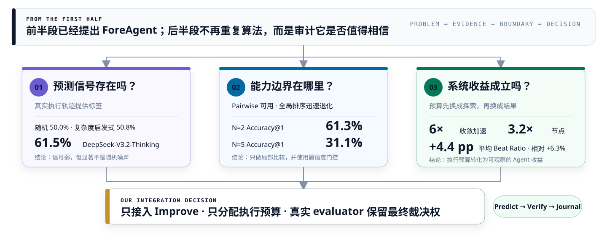
PROVENANCE BEFORE PREDICTION
AIDE + AutoMind
MLE-bench 真实轨迹
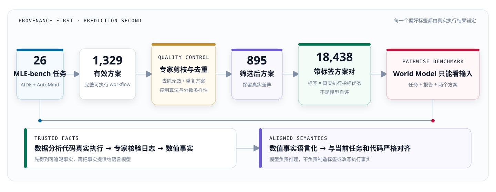
WHAT THE WORLD MODEL ACTUALLY SEES
同一模型，不同输入形态。
更多 token ≠ 更可靠判断。
CLAIM 01 / THE SIGNAL EXISTS
CLAIM 02 / LOCAL, NOT GLOBAL
六成说明信号存在，
边界决定它能拥有多大权力。
不能凭第一印象选择“看起来更高级”的代码。
World Model 是局部比较器，不是全局规划器。
CLAIM 02 / TWO NOISY SIGNALS
系统面对的不是“预测或执行”二选一，而是两个成本不同、强度不同的有噪声信号。
EVIDENCE → CONTROL STRATEGY
不是先画架构再找理由，
而是让实验边界决定控制策略。
CLAIM 03 / AGENT-LEVEL VALUE
5 tasks · 3 runs/task · 12h
相同时间预算，看过更多方案
平均收敛时间加速
绝对提升 4.4 个百分点 · 相对约 +6.3%
EXTERNAL VALIDITY
主动划清外推边界，
避免把过滤器讲成通用世界模型。
总体约六成；复杂代码与细粒度类内差异更难。
CV / NLP 的语言化数据报告仍依赖可用元数据。
两个未见任务不足以证明广泛泛化。
m=10 · c=.7 · k=1 尚未随任务与预算动态适配。
FULL DATA PROVENANCE
26 tasks · 1,329 solutions
895 instances · 18,438 pairs
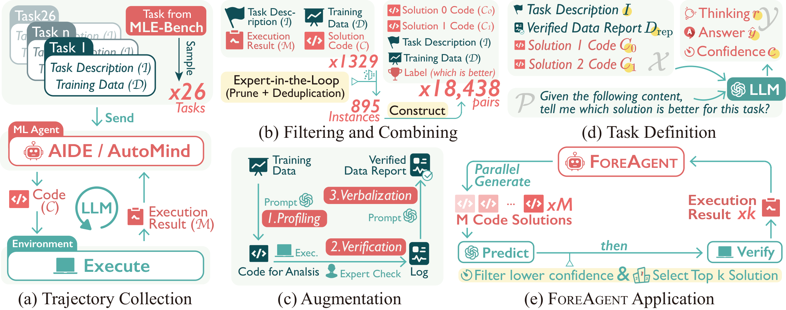
FLOW 10 · DATA PROVENANCE

01 / DATA REPRESENTATION
只看代码约等于没有上下文；数值统计开始提供信号，语言化报告把任务、数据和方案真正对齐。
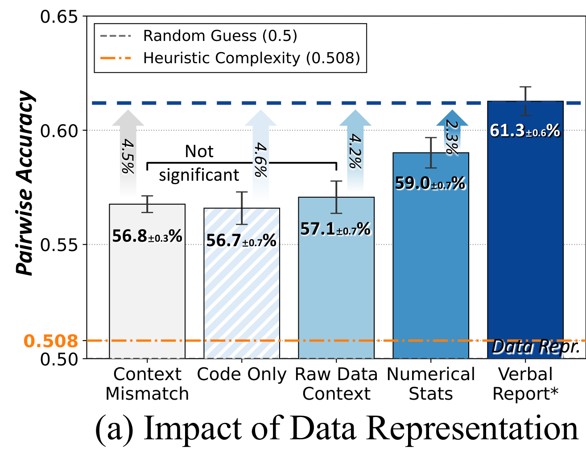
03 / SCALING LAW
Qwen 系列随规模只有缓慢提升；真正明显的跃迁来自 DeepSeek 的 Thinking 模式。系统需要的是推理过程，而不只是更大的参数量。
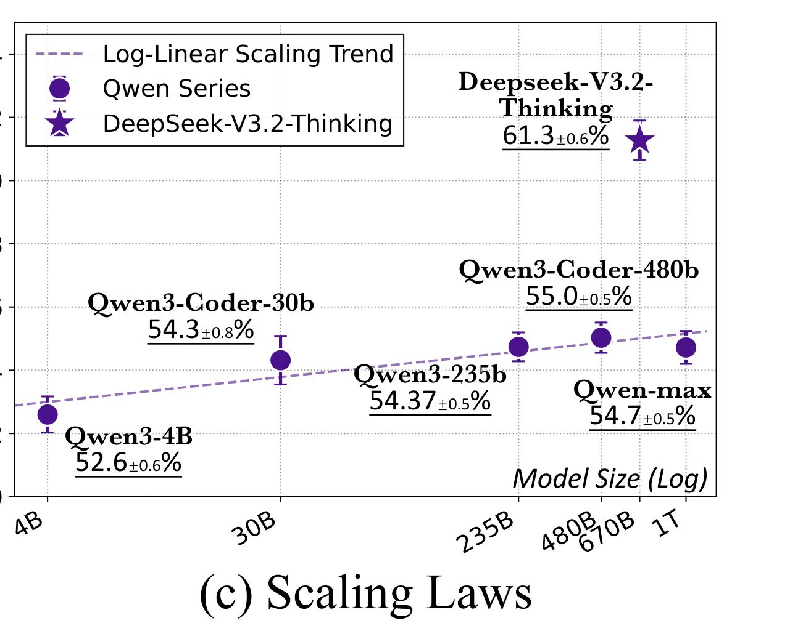
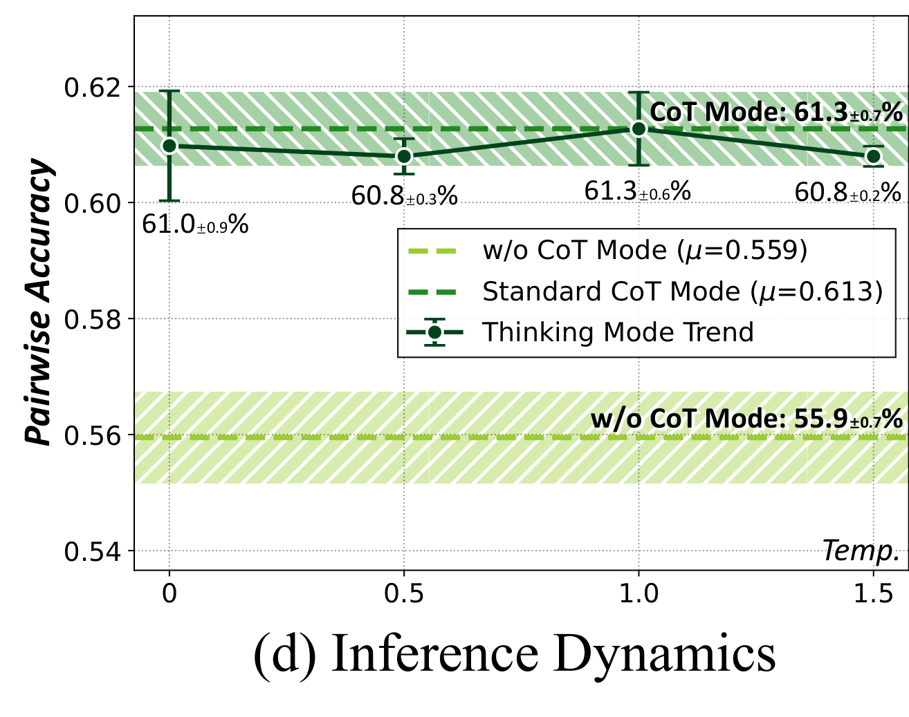
04 / INFERENCE DYNAMICS
温度从 0 到 1.5，Thinking 模式始终稳定在约 61%；关闭 CoT 后降到约 55.9%。因此 Pairwise 比较不能退化成第一印象投票。
05 / CALIBRATION
DeepSeek 在高置信区间达到约 77.4%，GPT-5.1 达到约 86.8%。
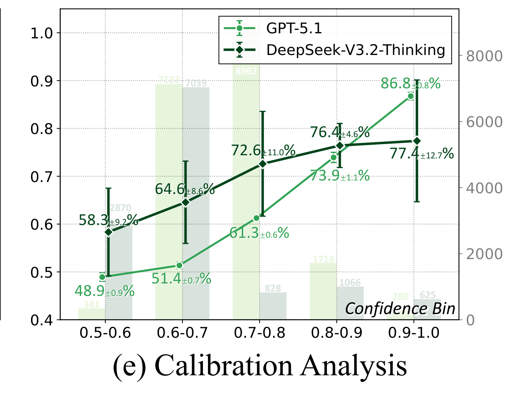
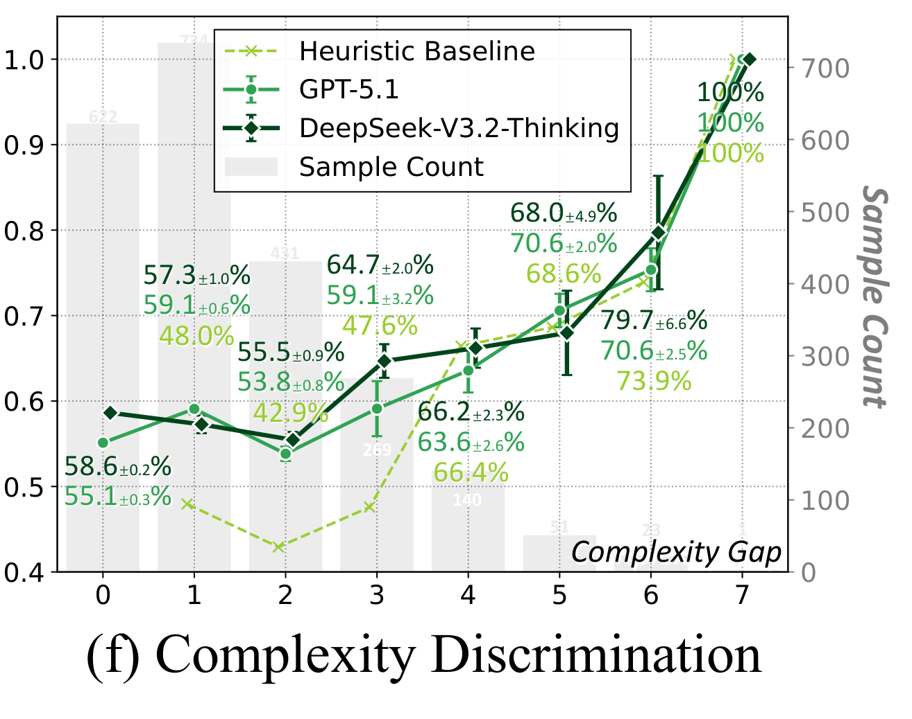
06 / COMPLEXITY DISCRIMINATION
复杂度差距扩大后准确率快速升高；差距小时仍在 55%–60% 附近。World Model 适合粗筛，不适合代替真实 evaluator。
AGENT-LEVEL RESULTS
5 tasks · 3 runs/task · 12h
三张图必须放在一起看
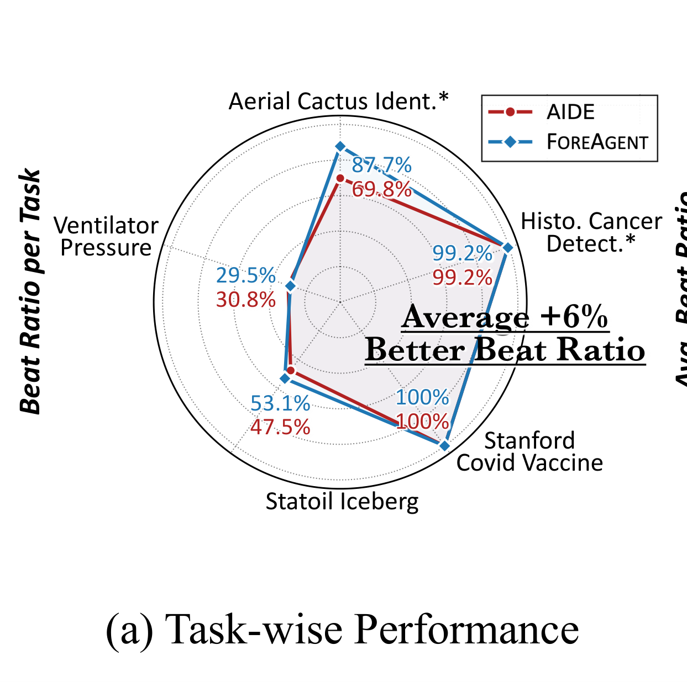
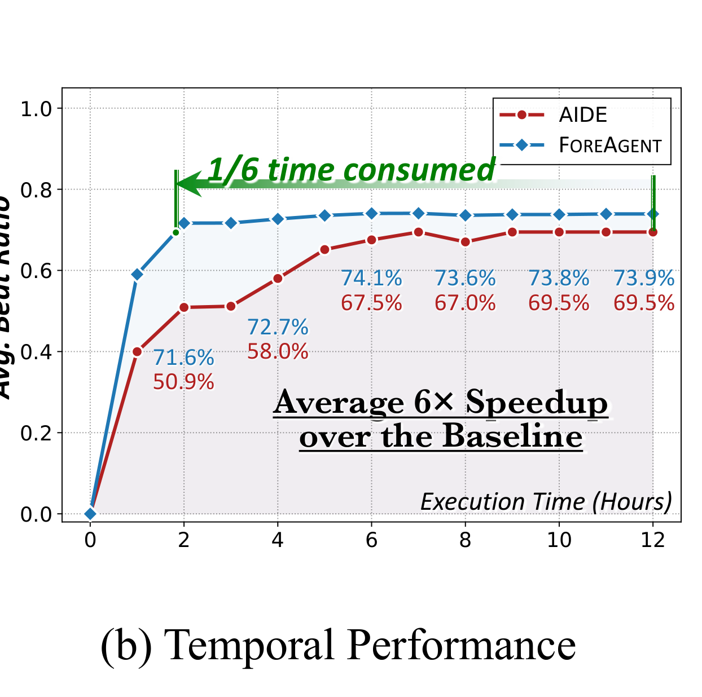
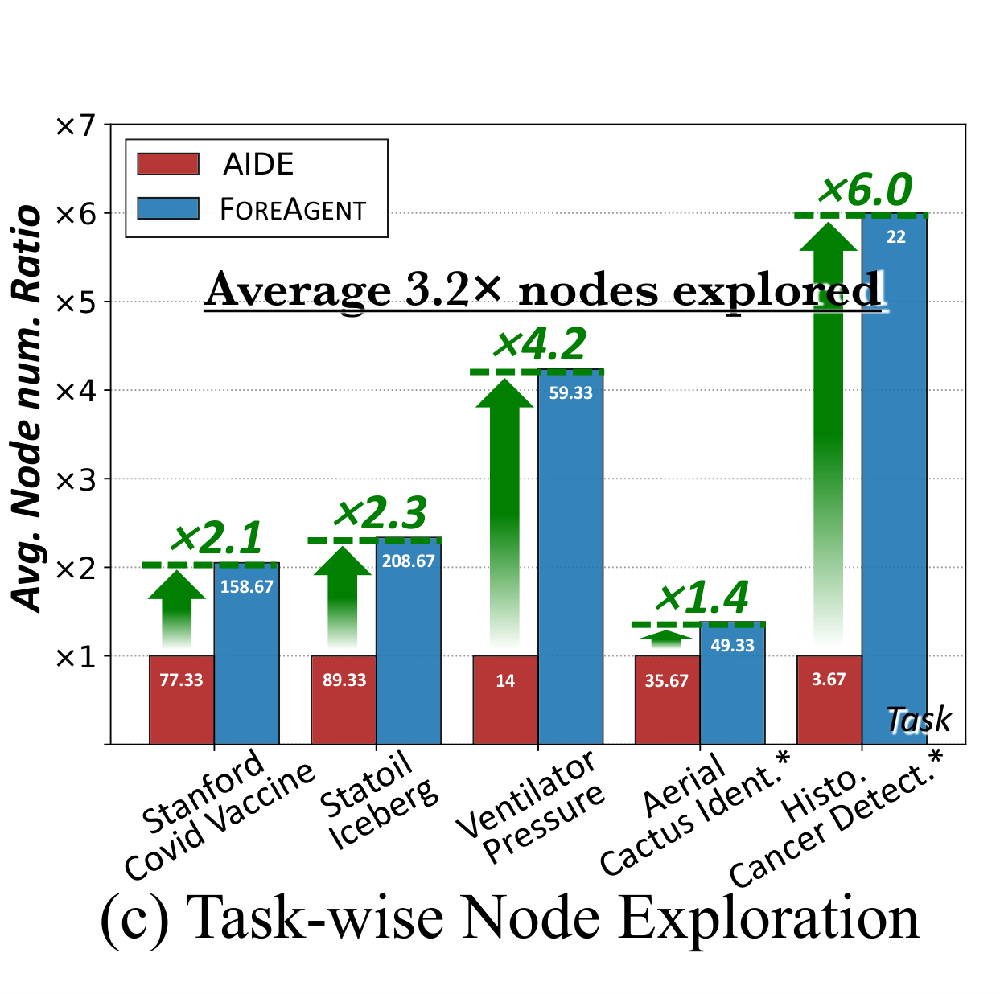
BACK TO OUR SYSTEM / PERMISSION CONTRACT
论文给出能力证据；
系统负责限制它的权限。
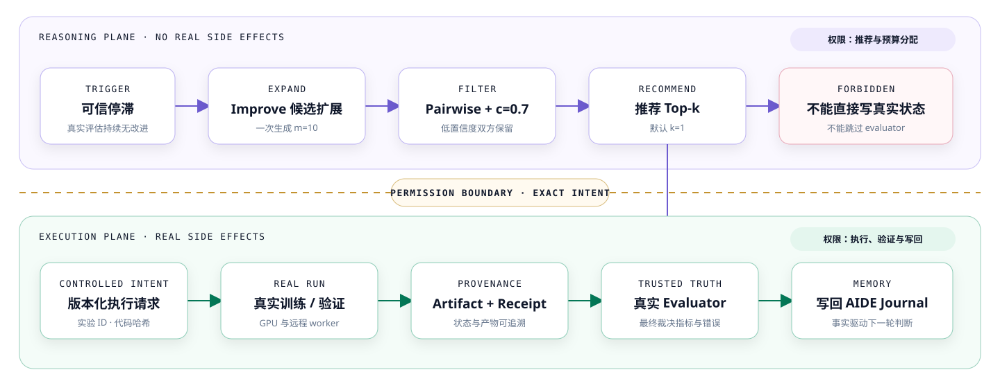
OUR CONTRIBUTION / COMPLETE LOOP
论文补上 VALUE；
工程结构决定系统是否可信。
模型负责判断；状态机和 provenance 守住执行边界。
观察器丢失不等于尝试失败，尝试失败不等于目标结束。
通过看板、Journal 和结构化产物同步，不复制无限对话。
有提分就利用；可信停滞后才扩大探索。
FINAL TAKEAWAY
该原则将继续用于暑期 Auto Research 架构优化。
POSSIBLE INNOVATIONS / EVIDENCE
作者讨论 × 案例失败 × 框架边界
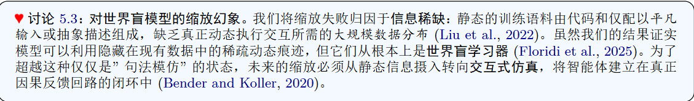
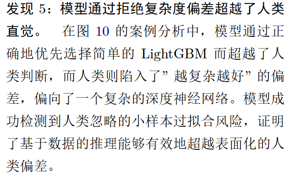
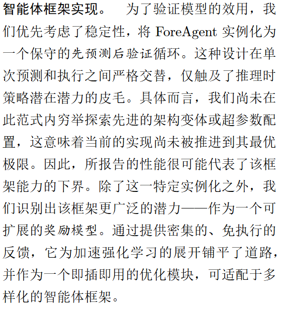
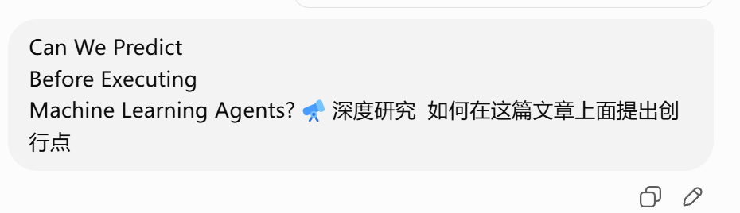
NEXT / TWO IMPROVEMENT TRACKS
一条优化判断器；
一条优化 Agent 系统。
训练专门的排序器或分类器，直接学习方案特征与真实结果之间的映射。
用偏好方案对低成本微调开源模型，让模型适配代码与任务判断。
通过偏好优化或奖励建模，进一步提升细粒度方案比较能力。
在代码和 World Model 之间加入数据验证、报告压缩、候选去重与证据整理。
把 ForeAgent 模块缝到能力更强、推理更稳定的新模型之上。
RANKING SYSTEM / FIVE LAYERS
从结构化输入到选择性升级
兼顾准确率、成本与置信度
Meta-features
代码→AST + 建模策略特征
LightGBM / XGBoost
深度 Pairwise Ranker
强 LLM Judge
A/B 交换增强
传递性约束
Listwise 排序约束
难例挖掘
OOF Stacking
任务领域专家路由
置信度校准
高置信度直接输出
中置信度使用融合结果
低置信度调用更强 LLM 或少量弱执行
DATA-CENTRIC IMPROVEMENT
先补信息，再谈更强模型
让输入更接近真实执行世界
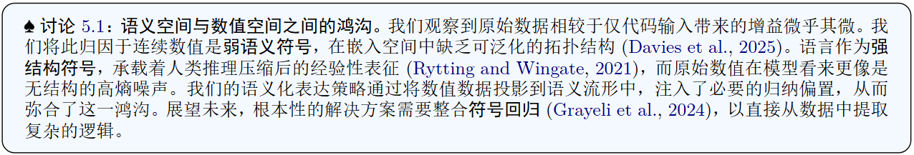
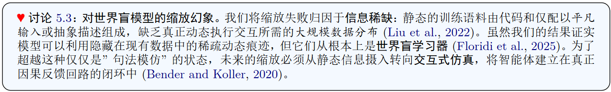
现在：数据 → 分析脚本 → 模型
目标：数据 → 模型
加入代码执行、验证反馈和失败原因，让模型看到“动作—结果”的因果关系。
让图像、文本、日志与数值统计彼此对齐，形成可联合分析的任务证据。
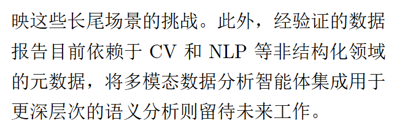
POSSIBLE INNOVATIONS / DIRECTIONS
从 Pairwise Judge
继续走向搜索价值模型。
| 创新路线 | 要解决的问题 | 核心方法 | 主要评估指标 |
|---|---|---|---|
| 01轨迹价值模型 | 当前节点未来是否仍有改进潜力？ | 基于代码、父子差分、数据报告和局部验证结果，预测未来 H 步收益。 | Future Gain Correlation Test Improve Rate |
| 02Validation-Test Gap | 本地验证分数是否值得信任？ | 单独建模泛化差距，结合数据属性、验证方案、代码结构和特征工程强度。 | Gap 排序相关 错误验证拒识率 |
| 03Judge → Editor | 不仅判断“选谁”，还要回答“怎样改”。 | 生成最小可执行修补建议，形成 Critique → Patch → Post-patch Preference 闭环。 | Patch 编译率 Test Improve Rate |
| 04跨任务检索增强 | 如何利用历史任务经验提升新任务泛化？ | 从任务描述、数据报告和评估协议中检索相似任务，将高效偏置作为额外上下文。 | Unseen-task Accuracy Retrieval Hit@k |
| 05轻量奖励模型 | 如何降低大模型 Judge 的推理成本？ | 蒸馏为本地 Pairwise / Process Reward Model，作为可插拔的廉价 Critic。 | ACC / ECE 延迟与 Token 成本 |
REPRODUCTION / TABLE 2
固定分层 1/10 子集
1,844 pairs · one-pass
| 模型 | 方案属性 | CV | NLP | Data Sci. | Easy | Med. | Hard | Class. | Regres. | Others | Avg Acc |
|---|---|---|---|---|---|---|---|---|---|---|---|
| DeepSeek-V3.2 Thinking | Tasks Avg | 59.3 | 66.9 | 57.4 | 60.4 | 63.9 | 57.0 | 58.9 | 62.1 | 66.8 | 61.5 |
| GPT-5.1 | Tasks Avg | 55.4 | 63.0 | 57.4 | 55.5 | 61.6 | 59.7 | 57.2 | 59.2 | 62.2 | 58.8 |
| gpt-5.6-sol max · one-pass | Traditional | 66.5 | 70.9 | 63.5 | 66.7 | 67.4 | 67.5 | 66.7 | 66.9 | 68.5 | 67.1 |
| gpt-5.6-sol | Modern | 74.1 | 70.6 | 70.1 | 71.6 | 72.2 | 71.2 | 69.5 | 73.3 | 74.5 | 71.8 |
| gpt-5.6-sol | Cross-Algo | 65.4 | 72.8 | 70.4 | 66.2 | 71.2 | 76.5 | 66.3 | 76.3 | 69.9 | 70.4 |
| gpt-5.6-sol | Self-Comp. | 75.3 | 69.3 | 64.6 | 72.4 | 69.9 | 64.1 | 70.4 | 68.5 | 73.9 | 70.4 |
| gpt-5.6-sol | Tasks Avg | 73.1 | 70.7 | 67.1 | 70.6 | 70.4 | 70.0 | 68.9 | 71.1 | 72.5 | 70.4 |
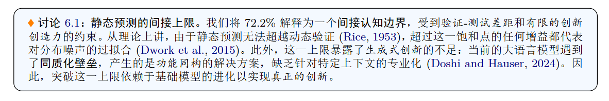
MEMORY SYSTEMS / COMPARISON
压缩后的横向对比
重点看检索、更新与持久化
| 系统 | 记忆类型 | 检索 / 索引 | 压缩与增量更新 | 持久化 | 成本影响 |
|---|---|---|---|---|---|
| AIDE | 搜索树短期记忆；摘要算子 | 读取最佳 / 候选节点摘要；树元数据 | 摘要历史节点；按搜索步追加 | 跨会话未说明 | 提示开销较低；精确值未公开 |
| MLE-STAR | 外部知识 + previous attempts | Web 搜索、计划历史、代码块消融 | 消融总结；每轮 refinement 追加 | 知识库未说明 | 搜索与 checker 增加时延和资源 |
| ML-Master | 选择性作用域短期记忆 | 父节点 + 同层兄弟；搜索树结构 | 抽取 salient insights；节点写回 | 分支一致性强；跨会话未说明 | 控制 prompt，减少 reasoning overload |
| ML-Master 2.0 | Experience / Knowledge / Wisdom 分层长期记忆 | 先检索 prior wisdom；phase boundary consolidation | context migration；经验蒸馏并晋升 | 显式长期稳定知识 | 上下文约 20万+ → 约 7万 token |
| ReasoningBank | 成败经验的 reasoning memory | 检索结构化 reasoning item | 成功 / 失败轨迹蒸馏；持续写入 | 面向部署后持续学习 | 提升 success rate，减少 task steps |
| MTL | 跨域统一 memory pool | 任务 / memory embedding cosine；top-k | Trajectory / Workflow / Summary / Insight | 可跨模型、跨域迁移 | 仅检索 3 条；431 条优于 5.8k |
| CBR-R&D | 持久案例记忆 | embedding + code fingerprint + provenance | 五道质量门控；三阶段更新 | 跨会话持久化；可读文件 | 检索与质量检查增加开销 |
RESEARCH COST / FULL REPRODUCTION
中转站 Pro 换算口径
¥0.17 / $1 平台额度
SUMMER PLAN · RESEARCH
先读论文、改架构；
再根据王老师的意见选择路径。
暑假上午与晚上持续推进科研
把架构优化沉淀为可验证成果
开展其他研究方向
作为后续实验平台
积累项目与实验经验
CURRENT KAGGLE FIT
OpenAI · Featured Code Competition
AI Agent Security
目标是寻找工具型 Agent 从不可信输入走向不安全动作的多步攻击路径，并产出可复现、可验证的结果。
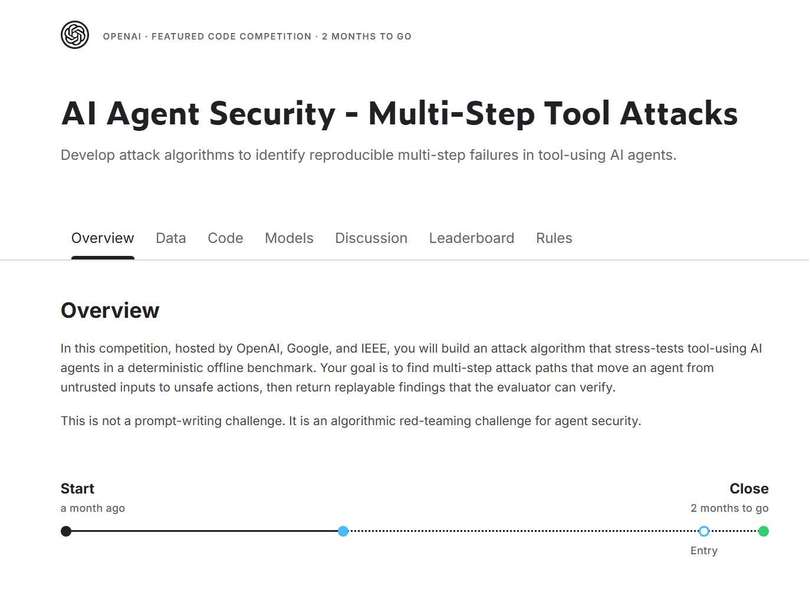
SUMMER PLAN · ALGORITHM
7 月 29 日先打邀请赛；
8 月再决定是否训练到 11 月。
兼顾新 OI 选手到校、马蹄杯与辽宁邀请赛。
队伍缺人，跟队参赛
坚持到 11 月
开学后减少算法投入
转向科研与 ACM 招新
REPRODUCTION / GPU BUDGET
按单卡 ¥2.59 / 小时 计
仅估算计算资源成本
AUTO RESEARCH × FOREAGENT
THANK YOU FOR YOUR ATTENTION
感谢王志文老师的指导，也感谢团队同学在实验、比赛与讨论中的协作。